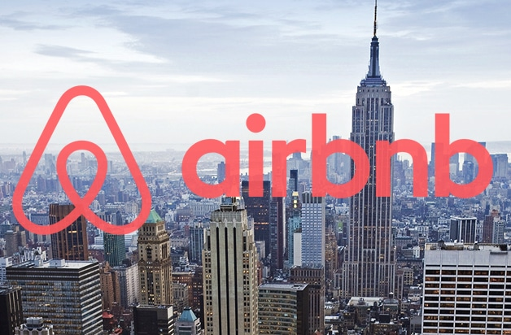

Hi! My name is Zoë and I am a junior data analyst. I hold a bachelor's degree in Economics and International Studies.
Through out my studies, I have always loved to tell stories through data, from the raw data to the visualizations
that you can bring to life. I have received a cerfication in software programing and another in data analytics from
Tech901, an IT training program in Memhpis, TN, and have also completed the Google Data Analytics Certification.
This is a data cleaning project using SQL on Microsoft SQL Server MS. I use several different data cleaning processes such as standardizing date formats, removing duplicate and irrelevant rows, and modifying data that is incomplete on a dataset of Nashville homes.

In this data exploration project, I used MS SQL Server to perform joins, create tables, and use aggregate functions on Covid-19 data. I was able to explore findings such as countries with the highest infection rates and vaccination rates.

This links to my Tableau Public which showcases personal and educational projects that I have worked on including live dashboards.
This is a quick SQL project that cleans up a dataset downloaded from Kaggle on the Olympic Games. Columns include athlete name, age, height, weight, sport and more. This project uses the CASE function, aliases, splitting columns, and other important SQL cleaning queries.
This project was in completion of Google's Data Analytics Certification. I was tasked with analyzing FitBit data for Bellabeat, a major manufacturer of tech fitness products to improve their future marketing strategies. I used RStudio to clean, analyze, and vizualize important data points.

This is a data exploration project using a public dataset of Airbnb's in New York City. I answered questions such as which borough has the most airbnb listings and what the average price was in each borough.